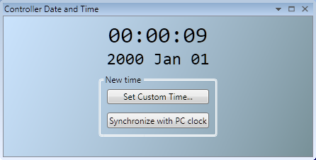
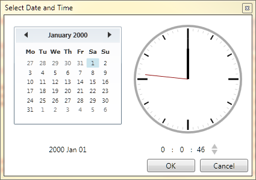

The Date and Time tool is used to monitor and set the real-time clock on the controller.
The date and time can be set in two ways:
To set the date and time manually, click on the combo box to display a date and time selector dialog.

Select the date and time in the dialog then click outside it. The date and time selector dialog will close. Then click on the Set button in the Date and Time tool to update the controller.
To set the date and time on the controller to same time as the local PC clock, click on the "Synchronize with PC Clock" button.